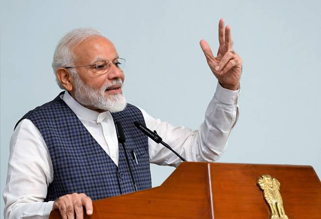

Famous Speech of Narendra Modi
The early stages of the COVID-19 pandemic.
Highlights:Modi used this episode of his radio program Mann Ki Baat to encourage social distancing, support for frontline workers, and solidarity among citizens. He also addressed the economic impact of the lockdown and urged support for local businesses. His monthly radio program where he addresses various social issues and achievements.
On October 1, 2016, following the surgical strikes carried out by the Indian Army against militant launch pads in Pakistan-administered Kashmir, Prime Minister Narendra Modi addressed the nation. This speech was significant as it was delivered in the wake of a major military operation and aimed at rallying national support and conveying the government's stance on national security.
Modi praised the Indian Armed Forces for their bravery and effectiveness in conducting the surgical strikes, which targeted terrorist launch pads across the Line of Control (LoC).
Message to Pakistan:While addressing the issue of Pakistan, Modi reiterated India's stance on not tolerating terrorism and underscored the need for a robust response to acts of aggression. He highlighted that the strikes were a clear message against those who harbor and support terrorism.